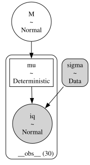
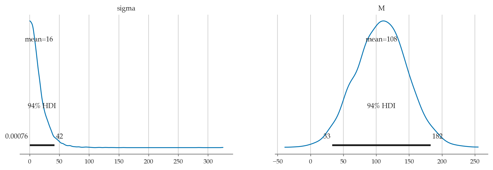
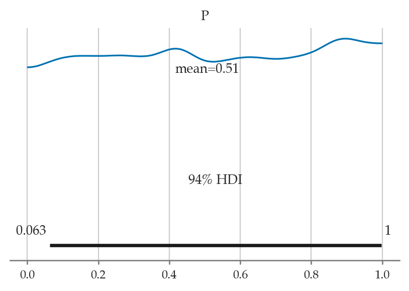

Section 5.2 — Bayesian inference computations#
This notebook contains the code examples from Section 5.2 Bayesian inference computations from the No Bullshit Guide to Statistics.
See also:
Notebook setup#
# load Python modules
import os
import numpy as np
import pandas as pd
import seaborn as sns
import matplotlib.pyplot as plt
# Figures setup
plt.clf() # needed otherwise `sns.set_theme` doesn"t work
from plot_helpers import RCPARAMS
RCPARAMS.update({"figure.figsize": (5, 3)}) # good for screen
# RCPARAMS.update({"figure.figsize": (5, 1.6)}) # good for print
sns.set_theme(
context="paper",
style="whitegrid",
palette="colorblind",
rc=RCPARAMS,
)
# High-resolution please
%config InlineBackend.figure_format = "retina"
# Where to store figures
DESTDIR = "figures/bayes/computations"
<Figure size 640x480 with 0 Axes>
# set random seed for repeatability
np.random.seed(42)
#######################################################
Definitions#
TODO
Posterior inference using MCMC estimation#
Components of a Bayesian model#
Example 1: estimating the bias of a coin#
# Sample of coin tosses observations (1=heads 0=tails)
# We assume they come from a Bernoulli distribution
ctosses = [1,1,0,0,1,0,1,1,1,1,1,0,1,1,0,0,0,1,1,1,
1,1,1,1,1,1,1,0,1,1,1,1,1,1,1,1,0,0,1,0,
0,1,0,1,0,1,0,1,1,0]
sum(ctosses), len(ctosses), sum(ctosses)/len(ctosses)
(34, 50, 0.68)
df1 = pd.DataFrame({"heads":ctosses})
# df1.head()
# ALT. load the `ctosses` data frame from the exercises/ folder
df1 = pd.read_csv("../datasets/exercises/ctosses.csv")
# df1.head()
df1["heads"].mean()
0.68
The model is
# BONUS DEMO: simulate a random sample from the data model (for a fixed `true_p`)
# np.random.seed(46)
# params
n = len(ctosses)
true_p = 0.7
# gen a random dataframe DF1 like df1
from scipy.stats import bernoulli
ctosses = bernoulli(p=true_p).rvs(n)
DF1 = pd.DataFrame({"heads": ctosses})
DF1["heads"].values, DF1["heads"].mean()
(array([1, 0, 0, 1, 1, 1, 1, 0, 1, 0, 1, 0, 0, 1, 1, 1, 1, 1, 1, 1, 1, 1,
1, 1, 1, 0, 1, 1, 1, 1, 1, 1, 1, 0, 0, 0, 1, 1, 1, 1, 1, 1, 1, 0,
1, 1, 1, 1, 1, 1]),
0.78)
# BONUS DEMO 2: simulate a random sample from the full Bayesian model
# np.random.seed(47)
n = len(ctosses)
# gen parameters p independently for each observation
from scipy.stats import uniform
true_ps = uniform(0,1).rvs(n)
# gen a random data sample of size n
from scipy.stats import bernoulli
ctosses = bernoulli(p=true_ps).rvs(n)
DF1 = pd.DataFrame({"ctoss": ctosses})
DF1["ctoss"].values, DF1["ctoss"].mean()
(array([1, 1, 1, 1, 0, 1, 0, 0, 0, 0, 0, 0, 0, 1, 0, 0, 0, 1, 0, 1, 0, 1,
0, 1, 1, 1, 0, 0, 0, 0, 1, 1, 0, 0, 1, 0, 1, 0, 1, 1, 1, 1, 1, 1,
1, 0, 0, 0, 0, 0]),
0.46)
import bambi as bmb
formula1 = "heads ~ 1"
priors1 = {
"Intercept": bmb.Prior("Uniform", lower=0, upper=1),
# "Intercept": bmb.Prior("Beta", alpha=1, beta=1),
}
#######################################################
mod1 = bmb.Model(formula1,
priors=priors1,
family="bernoulli",
link="identity",
data=df1)
mod1.set_alias({"Intercept":"P"})
mod1
WARNING (pytensor.tensor.blas): Using NumPy C-API based implementation for BLAS functions.
Formula: heads ~ 1
Family: bernoulli
Link: p = identity
Observations: 50
Priors:
target = p
Common-level effects
Intercept ~ Uniform(lower: 0.0, upper: 1.0)
mod1.build()
mod1.graph()
---------------------------------------------------------------------------
FileNotFoundError Traceback (most recent call last)
File /opt/hostedtoolcache/Python/3.9.20/x64/lib/python3.9/site-packages/graphviz/backend/execute.py:76, in run_check(cmd, input_lines, encoding, quiet, **kwargs)
75 kwargs['stdout'] = kwargs['stderr'] = subprocess.PIPE
---> 76 proc = _run_input_lines(cmd, input_lines, kwargs=kwargs)
77 else:
File /opt/hostedtoolcache/Python/3.9.20/x64/lib/python3.9/site-packages/graphviz/backend/execute.py:96, in _run_input_lines(cmd, input_lines, kwargs)
95 def _run_input_lines(cmd, input_lines, *, kwargs):
---> 96 popen = subprocess.Popen(cmd, stdin=subprocess.PIPE, **kwargs)
98 stdin_write = popen.stdin.write
File /opt/hostedtoolcache/Python/3.9.20/x64/lib/python3.9/subprocess.py:951, in Popen.__init__(self, args, bufsize, executable, stdin, stdout, stderr, preexec_fn, close_fds, shell, cwd, env, universal_newlines, startupinfo, creationflags, restore_signals, start_new_session, pass_fds, user, group, extra_groups, encoding, errors, text, umask)
948 self.stderr = io.TextIOWrapper(self.stderr,
949 encoding=encoding, errors=errors)
--> 951 self._execute_child(args, executable, preexec_fn, close_fds,
952 pass_fds, cwd, env,
953 startupinfo, creationflags, shell,
954 p2cread, p2cwrite,
955 c2pread, c2pwrite,
956 errread, errwrite,
957 restore_signals,
958 gid, gids, uid, umask,
959 start_new_session)
960 except:
961 # Cleanup if the child failed starting.
File /opt/hostedtoolcache/Python/3.9.20/x64/lib/python3.9/subprocess.py:1837, in Popen._execute_child(self, args, executable, preexec_fn, close_fds, pass_fds, cwd, env, startupinfo, creationflags, shell, p2cread, p2cwrite, c2pread, c2pwrite, errread, errwrite, restore_signals, gid, gids, uid, umask, start_new_session)
1836 err_msg = os.strerror(errno_num)
-> 1837 raise child_exception_type(errno_num, err_msg, err_filename)
1838 raise child_exception_type(err_msg)
FileNotFoundError: [Errno 2] No such file or directory: PosixPath('dot')
The above exception was the direct cause of the following exception:
ExecutableNotFound Traceback (most recent call last)
File /opt/hostedtoolcache/Python/3.9.20/x64/lib/python3.9/site-packages/IPython/core/formatters.py:974, in MimeBundleFormatter.__call__(self, obj, include, exclude)
971 method = get_real_method(obj, self.print_method)
973 if method is not None:
--> 974 return method(include=include, exclude=exclude)
975 return None
976 else:
File /opt/hostedtoolcache/Python/3.9.20/x64/lib/python3.9/site-packages/graphviz/jupyter_integration.py:98, in JupyterIntegration._repr_mimebundle_(self, include, exclude, **_)
96 include = set(include) if include is not None else {self._jupyter_mimetype}
97 include -= set(exclude or [])
---> 98 return {mimetype: getattr(self, method_name)()
99 for mimetype, method_name in MIME_TYPES.items()
100 if mimetype in include}
File /opt/hostedtoolcache/Python/3.9.20/x64/lib/python3.9/site-packages/graphviz/jupyter_integration.py:98, in <dictcomp>(.0)
96 include = set(include) if include is not None else {self._jupyter_mimetype}
97 include -= set(exclude or [])
---> 98 return {mimetype: getattr(self, method_name)()
99 for mimetype, method_name in MIME_TYPES.items()
100 if mimetype in include}
File /opt/hostedtoolcache/Python/3.9.20/x64/lib/python3.9/site-packages/graphviz/jupyter_integration.py:112, in JupyterIntegration._repr_image_svg_xml(self)
110 def _repr_image_svg_xml(self) -> str:
111 """Return the rendered graph as SVG string."""
--> 112 return self.pipe(format='svg', encoding=SVG_ENCODING)
File /opt/hostedtoolcache/Python/3.9.20/x64/lib/python3.9/site-packages/graphviz/piping.py:104, in Pipe.pipe(self, format, renderer, formatter, neato_no_op, quiet, engine, encoding)
55 def pipe(self,
56 format: typing.Optional[str] = None,
57 renderer: typing.Optional[str] = None,
(...)
61 engine: typing.Optional[str] = None,
62 encoding: typing.Optional[str] = None) -> typing.Union[bytes, str]:
63 """Return the source piped through the Graphviz layout command.
64
65 Args:
(...)
102 '<?xml version='
103 """
--> 104 return self._pipe_legacy(format,
105 renderer=renderer,
106 formatter=formatter,
107 neato_no_op=neato_no_op,
108 quiet=quiet,
109 engine=engine,
110 encoding=encoding)
File /opt/hostedtoolcache/Python/3.9.20/x64/lib/python3.9/site-packages/graphviz/_tools.py:171, in deprecate_positional_args.<locals>.decorator.<locals>.wrapper(*args, **kwargs)
162 wanted = ', '.join(f'{name}={value!r}'
163 for name, value in deprecated.items())
164 warnings.warn(f'The signature of {func.__name__} will be reduced'
165 f' to {supported_number} positional args'
166 f' {list(supported)}: pass {wanted}'
167 ' as keyword arg(s)',
168 stacklevel=stacklevel,
169 category=category)
--> 171 return func(*args, **kwargs)
File /opt/hostedtoolcache/Python/3.9.20/x64/lib/python3.9/site-packages/graphviz/piping.py:121, in Pipe._pipe_legacy(self, format, renderer, formatter, neato_no_op, quiet, engine, encoding)
112 @_tools.deprecate_positional_args(supported_number=2)
113 def _pipe_legacy(self,
114 format: typing.Optional[str] = None,
(...)
119 engine: typing.Optional[str] = None,
120 encoding: typing.Optional[str] = None) -> typing.Union[bytes, str]:
--> 121 return self._pipe_future(format,
122 renderer=renderer,
123 formatter=formatter,
124 neato_no_op=neato_no_op,
125 quiet=quiet,
126 engine=engine,
127 encoding=encoding)
File /opt/hostedtoolcache/Python/3.9.20/x64/lib/python3.9/site-packages/graphviz/piping.py:149, in Pipe._pipe_future(self, format, renderer, formatter, neato_no_op, quiet, engine, encoding)
146 if encoding is not None:
147 if codecs.lookup(encoding) is codecs.lookup(self.encoding):
148 # common case: both stdin and stdout need the same encoding
--> 149 return self._pipe_lines_string(*args, encoding=encoding, **kwargs)
150 try:
151 raw = self._pipe_lines(*args, input_encoding=self.encoding, **kwargs)
File /opt/hostedtoolcache/Python/3.9.20/x64/lib/python3.9/site-packages/graphviz/backend/piping.py:212, in pipe_lines_string(engine, format, input_lines, encoding, renderer, formatter, neato_no_op, quiet)
206 cmd = dot_command.command(engine, format,
207 renderer=renderer,
208 formatter=formatter,
209 neato_no_op=neato_no_op)
210 kwargs = {'input_lines': input_lines, 'encoding': encoding}
--> 212 proc = execute.run_check(cmd, capture_output=True, quiet=quiet, **kwargs)
213 return proc.stdout
File /opt/hostedtoolcache/Python/3.9.20/x64/lib/python3.9/site-packages/graphviz/backend/execute.py:81, in run_check(cmd, input_lines, encoding, quiet, **kwargs)
79 except OSError as e:
80 if e.errno == errno.ENOENT:
---> 81 raise ExecutableNotFound(cmd) from e
82 raise
84 if not quiet and proc.stderr:
ExecutableNotFound: failed to execute PosixPath('dot'), make sure the Graphviz executables are on your systems' PATH
<graphviz.graphs.Digraph at 0x7f9aa20c2d30>
idata1 = mod1.fit(draws=2000)
Modeling the probability that heads==1
Auto-assigning NUTS sampler...
Initializing NUTS using jitter+adapt_diag...
Multiprocess sampling (2 chains in 2 jobs)
NUTS: [P]
Sampling 2 chains for 1_000 tune and 2_000 draw iterations (2_000 + 4_000 draws total) took 2 seconds.
We recommend running at least 4 chains for robust computation of convergence diagnostics
# idata1
import arviz as az
post1 = az.extract(idata1, group="posterior", var_names="P").values
post1
array([0.80066103, 0.70509313, 0.63487042, ..., 0.67857519, 0.66790983,
0.66790983])
# ALT. manually extract
post1 = idata1["posterior"]["P"].stack(sample=("chain", "draw")).values
post1
array([0.80066103, 0.70509313, 0.63487042, ..., 0.67857519, 0.66790983,
0.66790983])
Visualize the posterior#
# ax = sns.kdeplot(x=post1);
ax = sns.histplot(x=post1);
ax.set_xlabel("$p$")
ax.set_ylabel("$f_{P|\\mathbf{c}}$");
{kind=link}
Summarize the posterior#
Posterior mean#
postmu1 = np.mean(post1)
postmu1
0.6715663712647658
Posterior standard deviation#
postvar1 = np.sum((post1-postmu1)**2) / len(post1)
poststd1 = np.sqrt(postvar1)
poststd1
0.06414520284650903
Posterior median#
np.median(post1)
0.6738769782450511
Posterior quartiles#
np.quantile(post1, [0.25, 0.5, 0.75])
array([0.6294191 , 0.67387698, 0.71613347])
Posterior percentiles#
np.percentile(post1, [3, 97])
array([0.54684035, 0.78715492])
Posterior mode#
# 1. Fit a Gaussian KDE curve approx. to the posterior samples `post1`
from scipy.stats import gaussian_kde
post1_kde = gaussian_kde(post1)
# 2. Find the max of the KDE curve
ps = np.linspace(0, 1, 10001)
densities1 = post1_kde(ps)
ps[np.argmax(densities1)]
0.677
Credible interval#
from ministats.hpdi import hpdi_from_samples
hpdi_from_samples(post1, hdi_prob=0.9)
[0.5707547085274514, 0.7811567778034616]
Predictions#
idata1_pred = idata1.copy()
# MAYBE: alt notation _rep instead of _pred ?
mod1.predict(idata1_pred, kind="response")
preds1 = az.extract(idata1_pred, group="posterior_predictive", var_names="heads").values
sns.histplot(x=preds1.sum(axis=0), stat="density", bins=range(15,50));
---------------------------------------------------------------------------
ValueError Traceback (most recent call last)
Cell In[24], line 3
1 idata1_pred = idata1.copy()
2 # MAYBE: alt notation _rep instead of _pred ?
----> 3 mod1.predict(idata1_pred, kind="response")
4 preds1 = az.extract(idata1_pred, group="posterior_predictive", var_names="heads").values
5 sns.histplot(x=preds1.sum(axis=0), stat="density", bins=range(15,50));
File /opt/hostedtoolcache/Python/3.9.20/x64/lib/python3.9/site-packages/bambi/models.py:811, in Model.predict(self, idata, kind, data, inplace, include_group_specific, sample_new_groups)
772 """Predict method for Bambi models
773
774 Obtains in-sample and out-of-sample predictions from a fitted Bambi model.
(...)
808 InferenceData or None
809 """
810 if kind not in ("mean", "pps"):
--> 811 raise ValueError("'kind' must be one of 'mean' or 'pps'")
813 if not inplace:
814 idata = deepcopy(idata)
ValueError: 'kind' must be one of 'mean' or 'pps'
Example 2: estimating an unknown mean#
# Sample of IQ observations
iqs = [ 82.6, 105.5, 96.7, 84.0, 127.2, 98.8, 94.3,
122.1, 86.8, 86.1, 107.9, 118.9, 116.5, 101.0,
91.0, 130.0, 155.7, 120.8, 107.9, 117.1, 100.1,
108.2, 99.8, 103.6, 108.1, 110.3, 101.8, 131.7,
103.8, 116.4]
We assume the IQ scores come from a population with standard deviation \(\sigma = 15\).
df2 = pd.DataFrame({"iq":iqs})
np.mean(iqs)
107.82333333333334
# ALT. load the `iqs.csv` data file from the exercises/ folder
df2 = pd.read_csv("../datasets/exercises/iqs.csv")
df2["iq"].mean()
107.82333333333334
The model is
import bambi as bmb
formula2 = "iq ~ 1"
priors2 = {
"Intercept": bmb.Prior("Normal", mu=100, sigma=40),
"sigma": bmb.Prior("Data", value=15),
}
mod2 = bmb.Model(formula2,
priors=priors2,
family="gaussian",
link="identity",
data=df2)
mod2.set_alias({"Intercept":"M"})
mod2
Formula: iq ~ 1
Family: gaussian
Link: mu = identity
Observations: 30
Priors:
target = mu
Common-level effects
Intercept ~ Normal(mu: 100.0, sigma: 40.0)
Auxiliary parameters
sigma ~ Data(value: 15.0)
mod2.build()
mod2.graph()

# Inspect different types of variables in the model
mod2.backend.model.data_vars, \
mod2.backend.model.observed_RVs, \
mod2.backend.model.unobserved_RVs
([sigma], [iq], [M, mu])
idata2 = mod2.fit(draws=2000)
Auto-assigning NUTS sampler...
Initializing NUTS using jitter+adapt_diag...
Multiprocess sampling (4 chains in 4 jobs)
NUTS: [M]
Sampling 4 chains for 1_000 tune and 2_000 draw iterations (4_000 + 8_000 draws total) took 1 seconds.
import arviz as az
post2 = az.extract(idata2, group="posterior", var_names="M").values
post2
array([105.78975236, 106.05993415, 103.60179907, ..., 102.77372777,
107.57079739, 102.11817756])
Summarize the posterior#
Posterior mean#
postmu2 = np.mean(post2)
postmu2
107.82728101451683
Posterior standard deviation#
postvar2 = np.sum((post2-postmu2)**2) / len(post2)
poststd2 = np.sqrt(postvar2)
poststd2
2.707519811955393
Posterior median#
np.median(post2)
107.85456874244214
Posterior quartiles#
np.quantile(post2, [0.25, 0.5, 0.75])
array([105.9427669 , 107.85456874, 109.68024587])
Posterior percentiles#
np.percentile(post2, [3, 97])
array([102.78281672, 112.88258315])
Posterior mode#
# 1. Fit a Gaussian KDE curve approx. to the posterior samples `post1`
from scipy.stats import gaussian_kde
post2_kde = gaussian_kde(post2)
# 2. Find the max of the KDE curve
mus = np.linspace(0, 200, 10001)
densities2 = post2_kde(mus)
mus[np.argmax(densities2)]
108.06
Credible interval#
from ministats.hpdi import hpdi_from_samples
hpdi_from_samples(post2, hdi_prob=0.9)
[103.36091671206084, 112.22329877607842]
Predictions#
## Can't use Bambi predict because of issue
## https://github.com/bambinos/bambi/issues/850
# idata2_pred = mod2.predict(idata2, kind="response", inplace=False)
# preds2 = az.extract(idata2_pred, group="posterior", var_names="mu").values.flatten()
from scipy.stats import norm
sigma = 15 # known population standard deviation
preds2 = []
np.random.seed(42)
for i in range(1000):
mu_post = np.random.choice(post2)
iq_pred = norm(loc=mu_post, scale=sigma).rvs(1)[0]
preds2.append(iq_pred)
sns.histplot(x=preds2, stat="density")
sns.kdeplot(x=post2);
{kind=link}
Visualizing and interpreting posteriors#
import arviz as az
Example 1 continued: inferences about the biased coin#
az.plot_posterior(idata1, hdi_prob=0.9);
{kind=link}
Options:
If multiple variables, you specify a list to
var_namesto select only certain variables to plotSet the option
point_estimateto"mode"or"median"Add the option
ropeto draw region of practical equivalence, e.g.,rope=[97,103]
az.summary(idata1, kind="stats", hdi_prob=0.9)
| mean | sd | hdi_5% | hdi_95% | |
|---|---|---|---|---|
| P | 0.671 | 0.065 | 0.568 | 0.779 |
Example 2 continued: inferences about the population mean#
az.plot_posterior(idata2, hdi_prob=0.9);
{kind=link}
az.summary(idata2, kind="stats", hdi_prob=0.9)
| mean | sd | hdi_5% | hdi_95% | |
|---|---|---|---|---|
| M | 107.827 | 2.708 | 103.361 | 112.223 |
Explanations#
Choosing priors#
More info about data inference objects#
type(idata1)
arviz.data.inference_data.InferenceData
idata1.groups()
['posterior', 'sample_stats', 'observed_data']
posterior1 = idata1["posterior"]
type(posterior1)
xarray.core.dataset.Dataset
posterior1.dims
FrozenMappingWarningOnValuesAccess({'chain': 4, 'draw': 2000})
list(posterior1.variables)
['chain', 'draw', 'P']
Ps = posterior1["P"]
type(Ps)
xarray.core.dataarray.DataArray
Ps.dims, Ps.shape
(('chain', 'draw'), (4, 2000))
MCMC diagnostics#
MCMC diagnostic plots#
There are several Arviz plots we can use to check if the Markov Chain Monte Carlo chains were sampling from the posterior as expected, or …
az.plot_trace(idata2);
{kind=link}
az.plot_trace(idata2, kind="rank_bars");
{kind=link}
az.summary(idata1, kind="diagnostics")
| mcse_mean | mcse_sd | ess_bulk | ess_tail | r_hat | |
|---|---|---|---|---|---|
| P | 0.001 | 0.001 | 3157.0 | 4753.0 | 1.0 |
az.summary(idata2, kind="diagnostics")
| mcse_mean | mcse_sd | ess_bulk | ess_tail | r_hat | |
|---|---|---|---|---|---|
| M | 0.044 | 0.031 | 3829.0 | 5572.0 | 1.0 |
Discussion#
Bambi default priors#
import bambi as bmb
mod2d = bmb.Model("iq ~ 1", family="gaussian", data=df2)
mod2d.set_alias({"Intercept":"M"})
mod2d
Formula: iq ~ 1
Family: gaussian
Link: mu = identity
Observations: 30
Priors:
target = mu
Common-level effects
Intercept ~ Normal(mu: 107.8233, sigma: 39.5303)
Auxiliary parameters
sigma ~ HalfStudentT(nu: 4.0, sigma: 15.8121)
np.mean(iqs), np.std(iqs), 2.5*np.std(iqs)
(107.82333333333334, 15.812119472803834, 39.53029868200959)
mod2d.build()
mod2d.plot_priors();
Sampling: [M, sigma]
{kind=link}

Probabilistic programming languages#
The Bayesian workflow#
# BONUS: verify the prior was flat
mod1.plot_priors();
Sampling: [P]
{kind=link}

Choice of priors#
Different priors lead to different posteriors.
See Code 1.8 and Figure 1.7 in
chp_01.ipynb
from scipy.stats import beta
x = np.linspace(0, 1, 500)
params = [(0.5, 0.5), (1, 1), (3,3), (100, 25)]
labels = ["Jeffreys",
"MaxEnt",
"Weakly Informative",
"Informative"]
_, ax = plt.subplots()
for (α, β), label, c in zip(params, labels, (0, 1, 4, 2)):
pdf = beta.pdf(x, α, β)
ax.plot(x, pdf, label=f"{label}", c=f"C{c}")
ax.set(yticks=[], xlabel="θ", title="Priors")
ax.legend()
# plt.savefig("img/chp01/prior_informativeness_spectrum.png")
{kind=link}
Bayesian workflow#
See also chp_09.ipynb